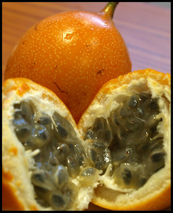

Experiencias gastronómicas
Bogotá tiene propuestas gastronómicas para todos los gustos y presupuestos. Hay miles de opciones para que explores los sabores colombianos y del mundo.
Plaza de Mercado Paloquemao
Bernal, Margarita. (2021)Guía para recorrer la plaza de mercado: ¿Cómo comprar en Paloquemao?.. Revista Diners. https://revistadiners.com.co/estilo-de-vida/gastronomia/26598_paloquemao-plaza-mercado-bogota/Desde hace un tiempo visito esta plaza de mercado, no solo para comprar los alimentos de mi casa, sino también para llevar a extranjeros y amigos a que conozcan una Colombia dulce, diversa, generosa, de gente humilde, trabajadora, sonriente y a que se deleiten con la variada y rica despensa que hay en nuestro país.
La Plaza de Paloquemao es una de las despensas de la ciudad. En la última década se ha convertido en un referente turístico de la ciudad. Es un mercado en el que probarás frutas de todos los rincones del país, platillos y bocadillos típicos y te asombrarás con millones de flores.
Datos clave para tu visita:
- Ubicado en Avenida Ciudad de Lima#25-04
- Abierto de lunes a sábados de 4:30 a 16:30 y domingos de 5:30 a 14:30
- Tip: Entre más temprano llegues, mejor.
He aquí algunas definiciones para entender mejor tu visita.
- Granadilla
-
Fruta más dulce de la familia de las passifloras, a la que también pertenece la maracuyá.
 - Pandeyuca
-
Amasijo a base de almidón de yuca y queso.

- Cabuya
-
Cuerda fabricada a partir de la fibra de fique muy utilizada en los mercados antiguos.
Conoce más frutas colombianas.